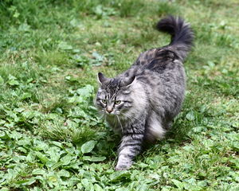

메인쿤(Maine Coon)은 대형 고양이 품종으로 중후하고 부드러운 여러 가지 털 색깔을 하고 있다. 미국 유일의 독립 품종으로 1850년경부터 메인주에서 사육되었기 때문에 이런 이름이 붙여졌다. 배·꼬리·목둘레에 털이 빽빽이 나 있는 털북숭이이다. 1800년 뉴잉글랜드에서 품종이 개량되었으며 코가 길고 눈과 귀가 크다. 체형은 튼튼하고 다리는 길며 근육이 발달하였다. 꼬리는 페르시안보다 길고, 몸털은 풍부하며 얽혀 있지만 명주 같은 촉감이 느껴진다.
잔 귀용은 루이 14세 가문에서 태어나 부유한 어린 시절을 보냈다. 어린시절 건강이 좋지 않아 교육시기를 놓친 그녀는 집과 거리가 먼 수녀원을 왕래하며 교육을 받았고, 먼 거리를 이동하는 동안 가난하고 힘든 많은 사람들을 살펴보게 된다. 그런 그녀는 훗날 가난한 사람들을 도우며 사는 삶을 꿈꾸게 된다. 잔 귀용의 가족들은 일찍 세상을 떠났고, 28살의 젊은 나이에 남편 마저 세상을 떠나면서 세상에 혼자가 되고 만다. 그녀는 자신의 신분과 슬픈 과거를 잊고자 늘 함께하던 고양이와 함께 모든 재산을 가지고 미국 메인주로 떠났다. 그 곳에서 그녀는 어렵고 힘든 사람들을 도와가며 살아가는데 특별한 점은 크고 작은 자선행사에 늘 그녀의 고양이와 함께 했다는 점이다. 사람들은 그녀의 선행을 기리며 그녀 곁에 늘 함께하는 고양이를 마을의 마스코트로 선정하게 된다. 이름은 메인주 이름의 “메인”과 너구리를 닮은 모습에서 “쿤”을 따와 “메인쿤”이라고 불렸다.
|  |
|---|
| 계:동물계 |
| 문:척삭동물문 |
| 강:포유강 |
| 목:식육목 |
| 과:고양잇과 |